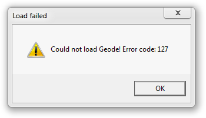
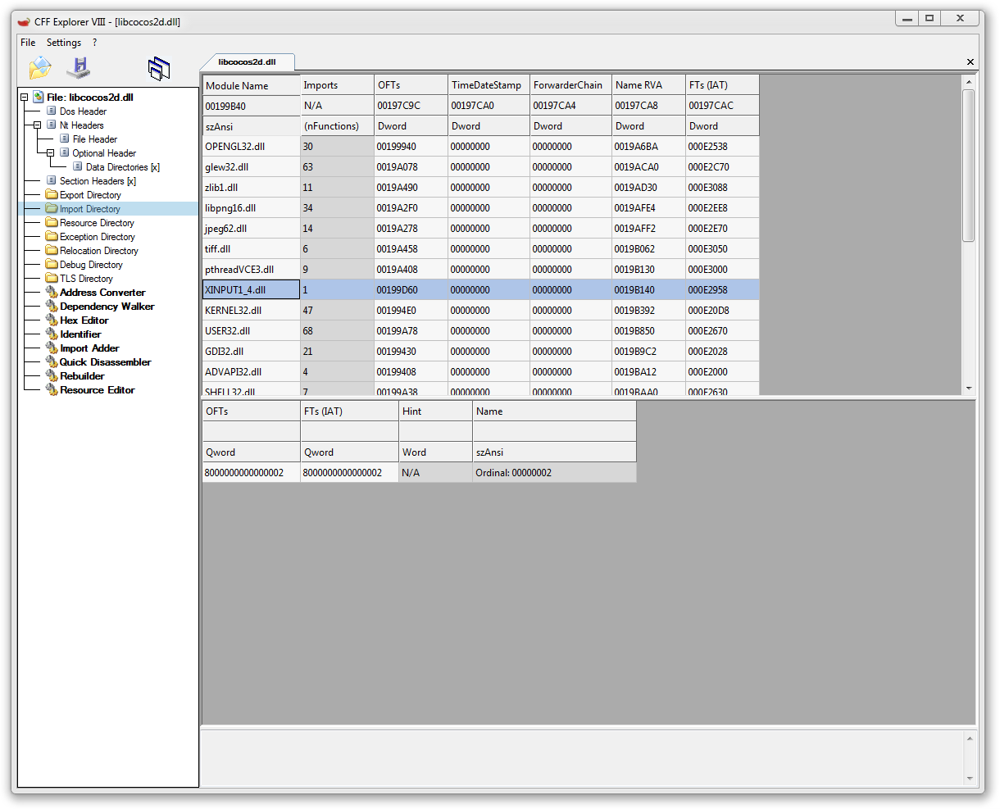
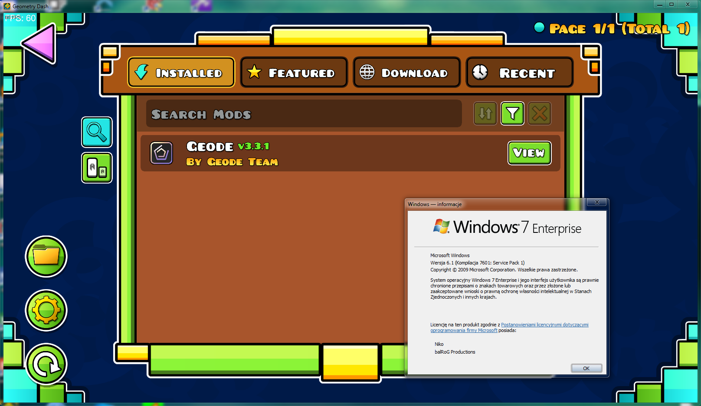

Geode on Windows 7
How to get the Geode mod loader working on Windows 7Note: I assume that you already have Geometry Dash running via the non-VxKex method
Step 1: Installing Geode
This part is simple. Just install Geode from their website.After installing it though, you'll only see this error:

Follow the next steps to fix it
Step 2: Enabling VxKex
I have taken a look at this, and Geode.dll calls CreateFile2 which doesn't exist in Windows 7. It's possible to fix it using VxKex but if you do that, you'll see that Geode doesn't even try to load.This is because of how VxKex works, and how tools like Mega Hack and Geode use XInput1_4.dll to inject themselves, however that can be worked around.
Step 3: Redirecting XInput1_4 to something else
For this step, firstly rename XInput1_4.dll to something else, that has the same amount of characters. For example ZInput1_4.dll(Also, be sure to go to System32 and copy XInput1_3.dll to XInput1_4.dll if you haven't done so already)
Afterwards, open libcocos2d.dll in CFF Explorer, navigate to the Import Table and change XInput1_4.dll to your DLL name.

Then, save the file. (You might need to save it in another folder then copy it into the Geometry Dash folder.
Enjoy!
Warning: Some mods might not work on Windows 7. Do not contact the mod developers for help in this case.
Known incompatibilities:
Mega Hack Pro (reported on Discord by user "tjdownchurch")